Chapter 5
Mixer
- 5.1 MIXER faders
- 5.2 MIXER, PAN row
- 5.3 Channel: STRIP
- 5.4 Channel: INSERTS
- 5.5 Channel: FX
- 5.6 Channel: COMP
- 5.7 Channel: SENDS
- 5.8 BUS A and B
- 5.9 MAIN OUT
- 5.10 MAIN FX
5.1 MIXER faders
MIXER.
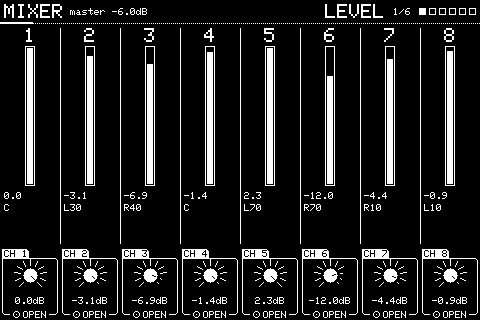
Eight channels, a fader and a knob each. The knobs work as a console row: PREV and NEXT step every knob through LEVEL, PAN, SEND A, SEND B, MUTE and SOLO together, and the header says which.
| Knob | Setting | Turn | Push |
|---|---|---|---|
| 1 to 8 | CH 1 to CH 8 | That channel's LEVEL, PAN, SEND A, SEND B, MUTE or SOLO, whichever row is picked | Opens that channel's pages. Shift + push resets the row's setting on it |
Knobs not listed do nothing here. Shift + push puts most settings back to how a new one has them.
5.2 MIXER, PAN row
NEXT on the faders.
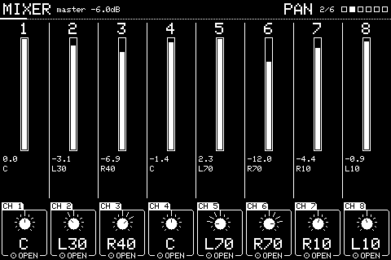
The same faders with the row on PAN. NEXT again gives SEND A, SEND B, MUTE and SOLO.
5.3 Channel: STRIP
Push a channel's knob on the faders.
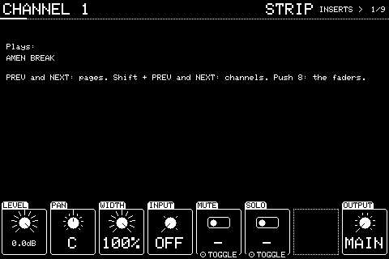
One channel's own pages. PREV and NEXT step its pages, Shift + PREV and NEXT step channels, and pushing knob 8 goes back to the faders. The top lists the slots playing through it.
| Knob | Setting | Turn | Push |
|---|---|---|---|
| 1 | LEVEL | The channel's level in dB | |
| 2 | PAN | Left to right | |
| 3 | WIDTH | Stereo width, 0 (mono) to 100% | |
| 4 | INPUT | OFF, or the line in on this channel: LINE (stereo), LINE L or LINE R (one side on both). It goes through the channel's inserts, FX, sends and output like anything played on it, and SAMPLING records it by recording this channel | |
| 5 | MUTE | Silences the channel | Toggles |
| 6 | SOLO | Hears only the soloed channels | Toggles |
| 8 | OUTPUT | MAIN, one of OUT 3 to OUT 8, or a pair: OUT 3+4, 5+6 or 7+8. On one output alone, left and right are summed to mono. The individual outputs skip the main out's EQ, compressor and MASTER, and have a limiter each | Back to the faders |
Knobs not listed do nothing here. Shift + push puts most settings back to how a new one has them.
5.4 Channel: INSERTS
NEXT from STRIP.
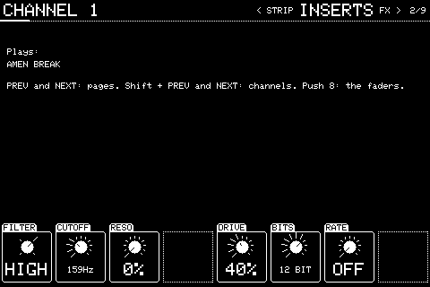
| Knob | Setting | Turn | Push |
|---|---|---|---|
| 1 | FILTER | OFF, LOW, HIGH or BAND | |
| 2 | CUTOFF | The filter's cutoff | |
| 3 | RESO | Its resonance | |
| 5 | DRIVE | Saturation, 0 to 100% | |
| 6 | BITS | Bit crushing, 16 down to 4 bits | |
| 7 | RATE | Sample-rate reduction: holds each sample for 1 to 32 |
Knobs not listed do nothing here. Shift + push puts most settings back to how a new one has them.
5.5 Channel: FX
NEXT from INSERTS.
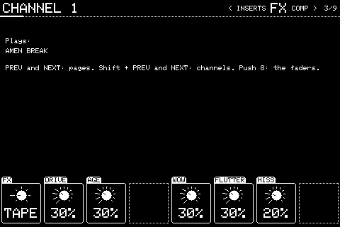
One effect per channel, after the inserts and before the compressor. FX picks it; the page then shows that effect's settings, and each effect keeps its own, so switching back finds them as you left them. Changing FX starts the new one from silence.
TAPE: a worn tape machine. DRIVE saturates it, lopsided like tape, so it thickens rather than fuzzes. AGE rolls off the top end. WOW is a slow drift in pitch, FLUTTER a fast wobble. HISS is tape noise. With WOW and FLUTTER at 0 it adds no delay.
VINYL: a record. AGE narrows the band from both ends. WARP is the slow pitch drift of a warped record. CRACKLE is clicks and the odd pop, NOISE the rumble and surface hiss.
TAPE's hiss and VINYL's crackle and noise come in with the sound and fade out after it, so a silent channel stays silent.
CHORUS thickens with a slowly moving copy of the sound; FLANGER sweeps a shorter one, and FEEDBACK makes it ring (below 0 it rings hollow). PHASER sweeps notches through the sound, and FEEDBACK sharpens them. MIX sets how much of the effect is heard against the dry sound.
TREMOLO moves the level with the LFO, or with MODE on PAN moves it between the sides. SHAPE is a smooth SINE or a choppy SQUARE.
| Knob | Setting | Turn | Push |
|---|---|---|---|
| 1 | FX | OFF, TAPE, VINYL, CHORUS, FLANGER, PHASER or TREMOLO | |
| 2 | DRIVE | TAPE: saturation | |
| 3 | AGE | TAPE: top end rolled off, from about 18kHz down to 3.5kHz. VINYL: the band narrowed, 20Hz to 16kHz down to 250Hz to 3kHz | |
| 5 | WOW | TAPE: slow pitch drift, once every 2 seconds, up to about 14 cents either way | |
| 6 | FLUTTER | TAPE: fast pitch wobble, up to about 24 cents either way | |
| 7 | HISS | TAPE: tape noise while the channel plays | |
| 5 | WARP | VINYL: slow pitch drift at 0.55Hz, a 33rpm record's turn | |
| 6 | CRACKLE | VINYL: clicks and pops, up to about 100 a second | |
| 7 | NOISE | VINYL: rumble and surface hiss | |
| 2 | RATE | CHORUS, FLANGER, PHASER: the sweep, 0.05 to 5Hz. TREMOLO: 0.1 to 20Hz | |
| 3 | DEPTH | How far it sweeps, or for TREMOLO how far the level dips | |
| 4 | FEEDBACK | FLANGER: -95 to +95%. PHASER: 0 to 90% | |
| 7 | SYNC | CHORUS, FLANGER, PHASER, TREMOLO: RATE becomes a note value, 1/16 to 8/1 (eight bars of 4/4). While the sequencer plays, the sweep is locked to the beat | Toggles |
| 8 | MIX | CHORUS, FLANGER, PHASER: the effect against the dry sound | |
| 4 | SHAPE / MODE | TREMOLO: knob 4 is SHAPE (SINE or SQUARE), knob 5 MODE (LEVEL or PAN) |
Knobs not listed do nothing here. Shift + push puts most settings back to how a new one has them.
5.6 Channel: COMP
NEXT from FX.
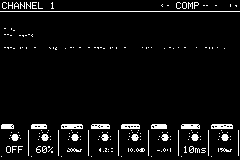
DUCK, then a compressor after the inserts and FX.
DUCK dips this channel while another plays: pick the channel to duck under, such as the kick's, and it drops by DEPTH whenever that channel is loud, coming back up over RECOVER. That's the pumping sidechain sound.
The compressor is off at a RATIO of 1:1.
| Knob | Setting | Turn | Push |
|---|---|---|---|
| 1 | DUCK | OFF, or the channel (1 to 8) this one dips under | |
| 2 | DEPTH | How far it dips when that channel is at half full scale or more | |
| 3 | RECOVER | How long it takes to come back up, 20ms to 2s | |
| 4 | MAKEUP | Gain after it, 0 to 24dB | |
| 5 | THRESH | Where it starts, -60 to 0dB | |
| 6 | RATIO | How hard, 1:1 to 20:1 | |
| 7 | ATTACK | 0.5 to 200ms | |
| 8 | RELEASE | 10ms to 2s | Back to the faders |
Knobs not listed do nothing here. Shift + push puts most settings back to how a new one has them.
5.7 Channel: SENDS
NEXT from COMP.
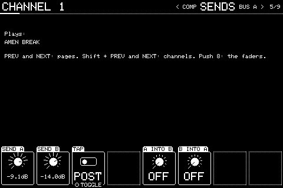
| Knob | Setting | Turn | Push |
|---|---|---|---|
| 1 | SEND A | How much goes to BUS A, OFF up to full | |
| 2 | SEND B | How much goes to BUS B | |
| 3 | TAP | POST or PRE fader for both sends (mute and solo silence both) | Toggles |
| 5 | A INTO B | BUS A's effect on into BUS B as well, such as delay repeats into a reverb. The same from every channel | |
| 6 | B INTO A | BUS B's into BUS A. Only one way at a time: turning one up turns the other off |
Knobs not listed do nothing here. Shift + push puts most settings back to how a new one has them.
5.8 BUS A and B
NEXT from SENDS (BUS A), then BUS B.
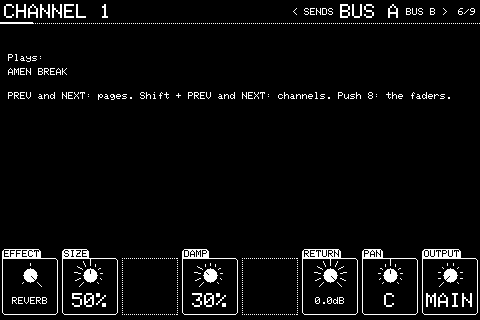
The two send busses, the same from every channel. Each shows only its effect's settings: here a reverb. BUS B, below, is a delay.
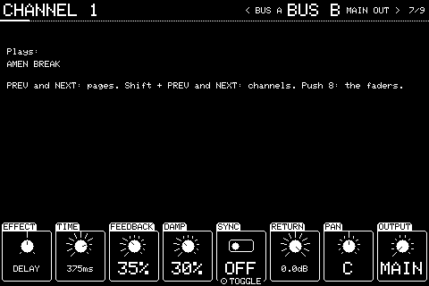
| Knob | Setting | Turn | Push |
|---|---|---|---|
| 1 | EFFECT | OFF, DELAY or REVERB | |
| 2 | SIZE / TIME | Reverb: the room's size. Delay: the delay time up to 2s, or with SYNC on a note value from 1/32 to 1/1 | |
| 3 | FEEDBACK | Delay: how much repeats, up to 95% | |
| 4 | DAMP | Darkens the reverb's tail, or each repeat | |
| 5 | SYNC | Delay: TIME follows the tempo as a note value | Toggles |
| 6 | RETURN | The level back into the mix | |
| 7 | PAN | Where the return sits | |
| 8 | OUTPUT | Where the return plays, as a channel's OUTPUT | Back to the faders |
Knobs not listed do nothing here. Shift + push puts most settings back to how a new one has them.
5.9 MAIN OUT
NEXT from BUS B.
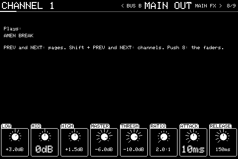
The main output: a 3-band EQ, its level, then a compressor.
| Knob | Setting | Turn | Push |
|---|---|---|---|
| 1 | LOW | Low shelf, -12 to +12dB | |
| 2 | MID | Mid band | |
| 3 | HIGH | High shelf | |
| 4 | MASTER | The output level | |
| 5 | THRESH | The compressor's threshold | |
| 6 | RATIO | Its ratio | |
| 7 | ATTACK | Its attack | |
| 8 | RELEASE | Its release |
Knobs not listed do nothing here. Shift + push puts most settings back to how a new one has them.
5.10 MAIN FX
NEXT from MAIN OUT.
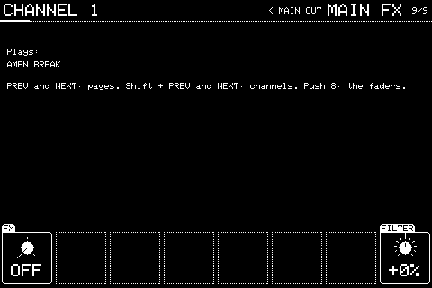
Effects on the whole mix, after its level: TAPE or VINYL, with the same settings as on a channel's FX page, and a DJ filter.
FILTER is one knob: turn it left for a low-pass closing down to 200Hz, right for a high-pass opening up to 5kHz. In the middle it's off. It comes after beat repeat, so a repeat can be filtered too.
| Knob | Setting | Turn | Push |
|---|---|---|---|
| 1 | FX | OFF, TAPE or VINYL | |
| 2-7 | - | That effect's settings, as on a channel's FX page | |
| 8 | FILTER | The DJ filter, -100% (low-pass) to +100% (high-pass) |
Knobs not listed do nothing here. Shift + push puts most settings back to how a new one has them.